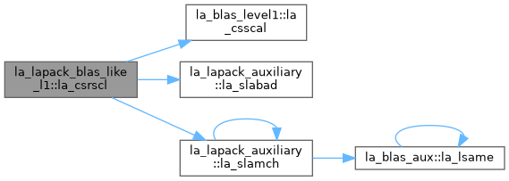
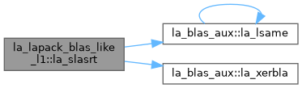
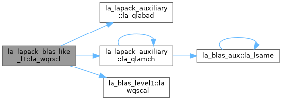
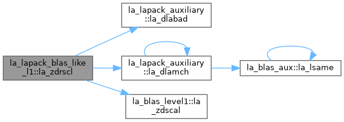

- Generated by
 1.13.2
1.13.2
|
fortran-lapack
|
BLAS-like level 1: scaling, conjugation, sums of squares, sorting. More...
Functions/Subroutines | |
| pure subroutine, public | la_slasrt (id, n, d, info) |
| Sort the numbers in D in increasing order (if ID = 'I') or in decreasing order (if ID = 'D' ). Use Quick Sort, reverting to Insertion sort on arrays of size <= 20. Dimension of STACK limits N to about 2**32. | |
| pure subroutine, public | la_dlasrt (id, n, d, info) |
| Sort the numbers in D in increasing order (if ID = 'I') or in decreasing order (if ID = 'D' ). Use Quick Sort, reverting to Insertion sort on arrays of size <= 20. Dimension of STACK limits N to about 2**32. | |
| pure subroutine, public | la_qlasrt (id, n, d, info) |
| Sort the numbers in D in increasing order (if ID = 'I') or in decreasing order (if ID = 'D' ). Use Quick Sort, reverting to Insertion sort on arrays of size <= 20. Dimension of STACK limits N to about 2**32. | |
| pure subroutine, public | la_slassq (n, x, incx, scl, sumsq) |
| ! | |
| pure subroutine, public | la_dlassq (n, x, incx, scl, sumsq) |
| ! | |
| pure subroutine, public | la_qlassq (n, x, incx, scl, sumsq) |
| ! | |
| pure subroutine, public | la_srscl (n, sa, sx, incx) |
| SRSCL: multiplies an n-element real vector x by the real scalar 1/a. This is done without overflow or underflow as long as the final result x/a does not overflow or underflow. | |
| pure subroutine, public | la_drscl (n, sa, sx, incx) |
| DRSCL: multiplies an n-element real vector x by the real scalar 1/a. This is done without overflow or underflow as long as the final result x/a does not overflow or underflow. | |
| pure subroutine, public | la_qrscl (n, sa, sx, incx) |
| QRSCL: multiplies an n-element real vector x by the real scalar 1/a. This is done without overflow or underflow as long as the final result x/a does not overflow or underflow. | |
| pure subroutine, public | la_csrscl (n, sa, sx, incx) |
| CSRSCL: multiplies an n-element complex vector x by the real scalar 1/a. This is done without overflow or underflow as long as the final result x/a does not overflow or underflow. | |
| pure subroutine, public | la_zdrscl (n, sa, sx, incx) |
| ZDRSCL: multiplies an n-element complex vector x by the real scalar 1/a. This is done without overflow or underflow as long as the final result x/a does not overflow or underflow. | |
| pure subroutine, public | la_wqrscl (n, sa, sx, incx) |
| WQRSCL: multiplies an n-element complex vector x by the real scalar 1/a. This is done without overflow or underflow as long as the final result x/a does not overflow or underflow. | |
| pure subroutine, public | la_clacgv (n, x, incx) |
| CLACGV: conjugates a complex vector of length N. | |
| pure subroutine, public | la_zlacgv (n, x, incx) |
| ZLACGV: conjugates a complex vector of length N. | |
| pure subroutine, public | la_wlacgv (n, x, incx) |
| WLACGV: conjugates a complex vector of length N. | |
| pure subroutine, public | la_classq (n, x, incx, scl, sumsq) |
| ! | |
| pure subroutine, public | la_zlassq (n, x, incx, scl, sumsq) |
| ! | |
| pure subroutine, public | la_wlassq (n, x, incx, scl, sumsq) |
| ! | |
BLAS-like level 1: scaling, conjugation, sums of squares, sorting.
| pure subroutine, public la_lapack_blas_like_l1::la_clacgv | ( | integer(ilp), intent(in) | n, |
| complex(sp), dimension(*), intent(inout) | x, | ||
| integer(ilp), intent(in) | incx ) |
CLACGV: conjugates a complex vector of length N.
| pure subroutine, public la_lapack_blas_like_l1::la_classq | ( | integer(ilp), intent(in) | n, |
| complex(sp), dimension(*), intent(in) | x, | ||
| integer(ilp), intent(in) | incx, | ||
| real(sp), intent(inout) | scl, | ||
| real(sp), intent(inout) | sumsq ) |
!
CLASSQ: returns the values scl and smsq such that ( scl**2 )*smsq = x( 1 )**2 +...+ x( n )**2 + ( scale**2 )*sumsq, where x( i ) = X( 1 + ( i - 1 )*INCX ). The value of sumsq is assumed to be non-negative. scale and sumsq must be supplied in SCALE and SUMSQ and scl and smsq are overwritten on SCALE and SUMSQ respectively. If scale * sqrt( sumsq ) > tbig then we require: scale >= sqrt( TINY*EPS ) / sbig on entry, and if 0 < scale * sqrt( sumsq ) < tsml then we require: scale <= sqrt( HUGE ) / ssml on entry, where tbig – upper threshold for values whose square is representable; sbig – scaling constant for big numbers;
| pure subroutine, public la_lapack_blas_like_l1::la_csrscl | ( | integer(ilp), intent(in) | n, |
| real(sp), intent(in) | sa, | ||
| complex(sp), dimension(*), intent(inout) | sx, | ||
| integer(ilp), intent(in) | incx ) |
CSRSCL: multiplies an n-element complex vector x by the real scalar 1/a. This is done without overflow or underflow as long as the final result x/a does not overflow or underflow.

| pure subroutine, public la_lapack_blas_like_l1::la_dlasrt | ( | character, intent(in) | id, |
| integer(ilp), intent(in) | n, | ||
| real(dp), dimension(*), intent(inout) | d, | ||
| integer(ilp), intent(out) | info ) |
Sort the numbers in D in increasing order (if ID = 'I') or in decreasing order (if ID = 'D' ). Use Quick Sort, reverting to Insertion sort on arrays of size <= 20. Dimension of STACK limits N to about 2**32.
| pure subroutine, public la_lapack_blas_like_l1::la_dlassq | ( | integer(ilp), intent(in) | n, |
| real(dp), dimension(*), intent(in) | x, | ||
| integer(ilp), intent(in) | incx, | ||
| real(dp), intent(inout) | scl, | ||
| real(dp), intent(inout) | sumsq ) |
!
DLASSQ: returns the values scl and smsq such that ( scl**2 )*smsq = x( 1 )**2 +...+ x( n )**2 + ( scale**2 )*sumsq, where x( i ) = X( 1 + ( i - 1 )*INCX ). The value of sumsq is assumed to be non-negative. scale and sumsq must be supplied in SCALE and SUMSQ and scl and smsq are overwritten on SCALE and SUMSQ respectively. If scale * sqrt( sumsq ) > tbig then we require: scale >= sqrt( TINY*EPS ) / sbig on entry, and if 0 < scale * sqrt( sumsq ) < tsml then we require: scale <= sqrt( HUGE ) / ssml on entry, where tbig – upper threshold for values whose square is representable; sbig – scaling constant for big numbers;
| pure subroutine, public la_lapack_blas_like_l1::la_drscl | ( | integer(ilp), intent(in) | n, |
| real(dp), intent(in) | sa, | ||
| real(dp), dimension(*), intent(inout) | sx, | ||
| integer(ilp), intent(in) | incx ) |
DRSCL: multiplies an n-element real vector x by the real scalar 1/a. This is done without overflow or underflow as long as the final result x/a does not overflow or underflow.
| pure subroutine, public la_lapack_blas_like_l1::la_qlasrt | ( | character, intent(in) | id, |
| integer(ilp), intent(in) | n, | ||
| real(qp), dimension(*), intent(inout) | d, | ||
| integer(ilp), intent(out) | info ) |
Sort the numbers in D in increasing order (if ID = 'I') or in decreasing order (if ID = 'D' ). Use Quick Sort, reverting to Insertion sort on arrays of size <= 20. Dimension of STACK limits N to about 2**32.
| pure subroutine, public la_lapack_blas_like_l1::la_qlassq | ( | integer(ilp), intent(in) | n, |
| real(qp), dimension(*), intent(in) | x, | ||
| integer(ilp), intent(in) | incx, | ||
| real(qp), intent(inout) | scl, | ||
| real(qp), intent(inout) | sumsq ) |
!
QLASSQ: returns the values scl and smsq such that ( scl**2 )*smsq = x( 1 )**2 +...+ x( n )**2 + ( scale**2 )*sumsq, where x( i ) = X( 1 + ( i - 1 )*INCX ). The value of sumsq is assumed to be non-negative. scale and sumsq must be supplied in SCALE and SUMSQ and scl and smsq are overwritten on SCALE and SUMSQ respectively. If scale * sqrt( sumsq ) > tbig then we require: scale >= sqrt( TINY*EPS ) / sbig on entry, and if 0 < scale * sqrt( sumsq ) < tsml then we require: scale <= sqrt( HUGE ) / ssml on entry, where tbig – upper threshold for values whose square is representable; sbig – scaling constant for big numbers;
| pure subroutine, public la_lapack_blas_like_l1::la_qrscl | ( | integer(ilp), intent(in) | n, |
| real(qp), intent(in) | sa, | ||
| real(qp), dimension(*), intent(inout) | sx, | ||
| integer(ilp), intent(in) | incx ) |
QRSCL: multiplies an n-element real vector x by the real scalar 1/a. This is done without overflow or underflow as long as the final result x/a does not overflow or underflow.
| pure subroutine, public la_lapack_blas_like_l1::la_slasrt | ( | character, intent(in) | id, |
| integer(ilp), intent(in) | n, | ||
| real(sp), dimension(*), intent(inout) | d, | ||
| integer(ilp), intent(out) | info ) |
Sort the numbers in D in increasing order (if ID = 'I') or in decreasing order (if ID = 'D' ). Use Quick Sort, reverting to Insertion sort on arrays of size <= 20. Dimension of STACK limits N to about 2**32.

| pure subroutine, public la_lapack_blas_like_l1::la_slassq | ( | integer(ilp), intent(in) | n, |
| real(sp), dimension(*), intent(in) | x, | ||
| integer(ilp), intent(in) | incx, | ||
| real(sp), intent(inout) | scl, | ||
| real(sp), intent(inout) | sumsq ) |
!
SLASSQ: returns the values scl and smsq such that ( scl**2 )*smsq = x( 1 )**2 +...+ x( n )**2 + ( scale**2 )*sumsq, where x( i ) = X( 1 + ( i - 1 )*INCX ). The value of sumsq is assumed to be non-negative. scale and sumsq must be supplied in SCALE and SUMSQ and scl and smsq are overwritten on SCALE and SUMSQ respectively. If scale * sqrt( sumsq ) > tbig then we require: scale >= sqrt( TINY*EPS ) / sbig on entry, and if 0 < scale * sqrt( sumsq ) < tsml then we require: scale <= sqrt( HUGE ) / ssml on entry, where tbig – upper threshold for values whose square is representable; sbig – scaling constant for big numbers;
| pure subroutine, public la_lapack_blas_like_l1::la_srscl | ( | integer(ilp), intent(in) | n, |
| real(sp), intent(in) | sa, | ||
| real(sp), dimension(*), intent(inout) | sx, | ||
| integer(ilp), intent(in) | incx ) |
SRSCL: multiplies an n-element real vector x by the real scalar 1/a. This is done without overflow or underflow as long as the final result x/a does not overflow or underflow.
| pure subroutine, public la_lapack_blas_like_l1::la_wlacgv | ( | integer(ilp), intent(in) | n, |
| complex(qp), dimension(*), intent(inout) | x, | ||
| integer(ilp), intent(in) | incx ) |
WLACGV: conjugates a complex vector of length N.
| pure subroutine, public la_lapack_blas_like_l1::la_wlassq | ( | integer(ilp), intent(in) | n, |
| complex(qp), dimension(*), intent(in) | x, | ||
| integer(ilp), intent(in) | incx, | ||
| real(qp), intent(inout) | scl, | ||
| real(qp), intent(inout) | sumsq ) |
!
WLASSQ: returns the values scl and smsq such that ( scl**2 )*smsq = x( 1 )**2 +...+ x( n )**2 + ( scale**2 )*sumsq, where x( i ) = X( 1 + ( i - 1 )*INCX ). The value of sumsq is assumed to be non-negative. scale and sumsq must be supplied in SCALE and SUMSQ and scl and smsq are overwritten on SCALE and SUMSQ respectively. If scale * sqrt( sumsq ) > tbig then we require: scale >= sqrt( TINY*EPS ) / sbig on entry, and if 0 < scale * sqrt( sumsq ) < tsml then we require: scale <= sqrt( HUGE ) / ssml on entry, where tbig – upper threshold for values whose square is representable; sbig – scaling constant for big numbers;
| pure subroutine, public la_lapack_blas_like_l1::la_wqrscl | ( | integer(ilp), intent(in) | n, |
| real(qp), intent(in) | sa, | ||
| complex(qp), dimension(*), intent(inout) | sx, | ||
| integer(ilp), intent(in) | incx ) |
WQRSCL: multiplies an n-element complex vector x by the real scalar 1/a. This is done without overflow or underflow as long as the final result x/a does not overflow or underflow.

| pure subroutine, public la_lapack_blas_like_l1::la_zdrscl | ( | integer(ilp), intent(in) | n, |
| real(dp), intent(in) | sa, | ||
| complex(dp), dimension(*), intent(inout) | sx, | ||
| integer(ilp), intent(in) | incx ) |
ZDRSCL: multiplies an n-element complex vector x by the real scalar 1/a. This is done without overflow or underflow as long as the final result x/a does not overflow or underflow.

| pure subroutine, public la_lapack_blas_like_l1::la_zlacgv | ( | integer(ilp), intent(in) | n, |
| complex(dp), dimension(*), intent(inout) | x, | ||
| integer(ilp), intent(in) | incx ) |
ZLACGV: conjugates a complex vector of length N.
| pure subroutine, public la_lapack_blas_like_l1::la_zlassq | ( | integer(ilp), intent(in) | n, |
| complex(dp), dimension(*), intent(in) | x, | ||
| integer(ilp), intent(in) | incx, | ||
| real(dp), intent(inout) | scl, | ||
| real(dp), intent(inout) | sumsq ) |
!
ZLASSQ: returns the values scl and smsq such that ( scl**2 )*smsq = x( 1 )**2 +...+ x( n )**2 + ( scale**2 )*sumsq, where x( i ) = X( 1 + ( i - 1 )*INCX ). The value of sumsq is assumed to be non-negative. scale and sumsq must be supplied in SCALE and SUMSQ and scl and smsq are overwritten on SCALE and SUMSQ respectively. If scale * sqrt( sumsq ) > tbig then we require: scale >= sqrt( TINY*EPS ) / sbig on entry, and if 0 < scale * sqrt( sumsq ) < tsml then we require: scale <= sqrt( HUGE ) / ssml on entry, where tbig – upper threshold for values whose square is representable; sbig – scaling constant for big numbers;